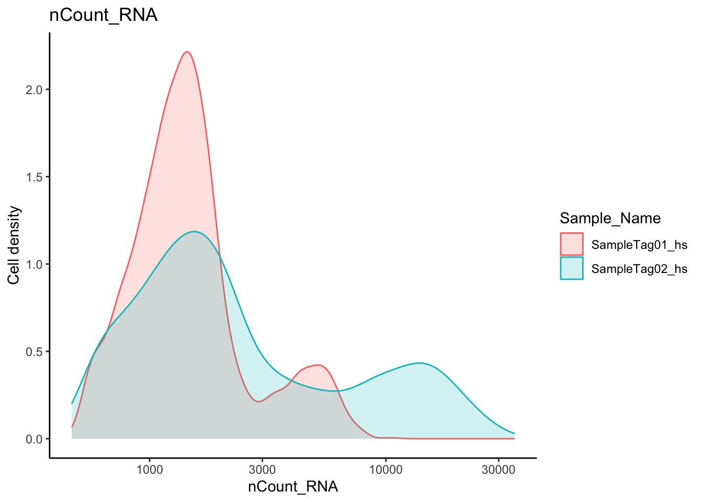
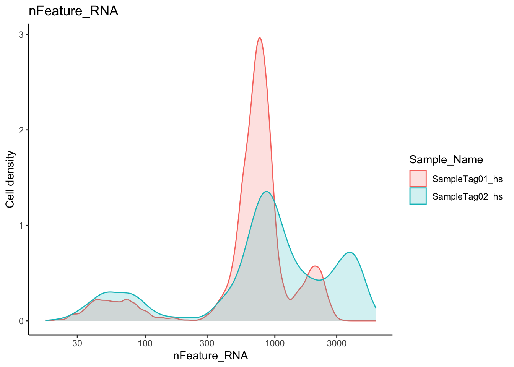
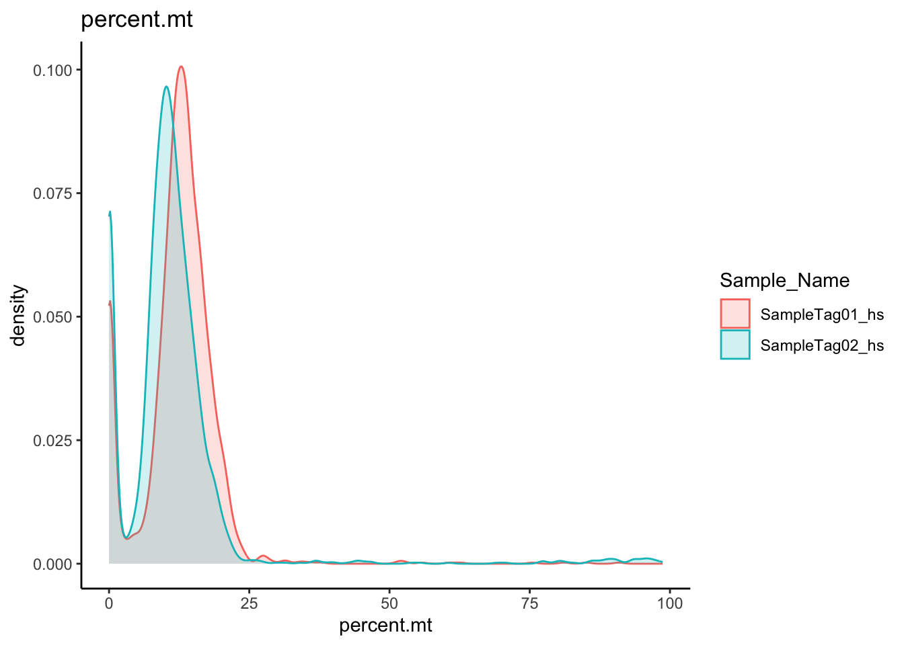
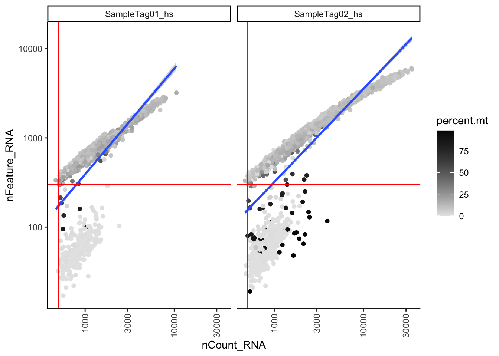
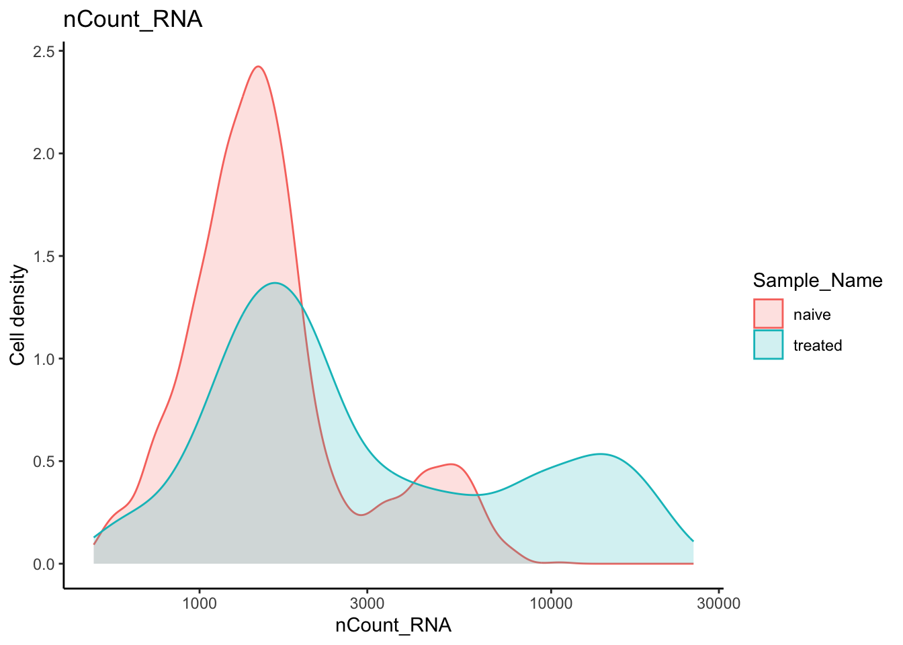
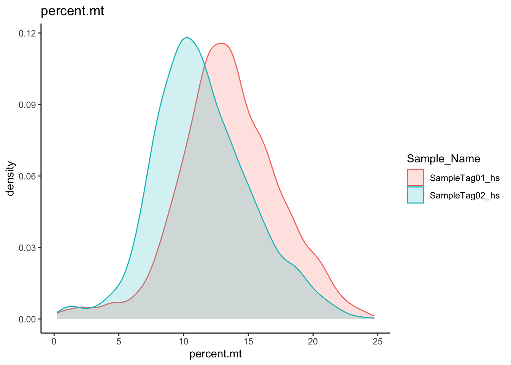
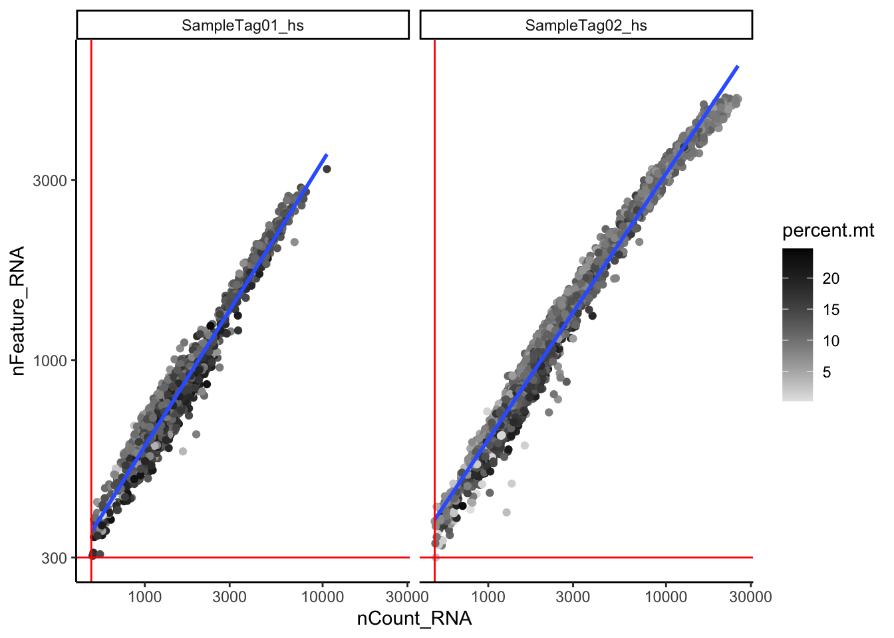

Chapter 2 Quality Control
Load RData
Load the RData which contain all files from previous chapter.
load("data/intermediate_data/chapter1.RData")1. Metrics for quality control
When creating a Seurat object, Seurat automatically creates some metadata for each cell. This information is stored in the meta.data.
orig.ident nCount_RNA nFeature_RNA Sample_Tag Sample_Name
74 SeuratProject 2389 1135 SampleTag01_hs naive
391 SeuratProject 5252 2088 SampleTag02_hs treated
440 SeuratProject 1205 630 SampleTag01_hs naive
1222 SeuratProject 2390 1152 SampleTag01_hs naive
2690 SeuratProject 1533 810 SampleTag01_hs naive
5077 SeuratProject 2083 1249 SampleTag02_hs treatedorig.ident Sample identity or sample name. By default, it is “SeuratProject”.
nCount_RNA UMI counts per cell.
nFeature_RNA Gene counts per cell.
Sample_Tag The cell is from which sample tag.
Sample_Name The cell is from which sample.
Quality control is to filter out cell labels that are of low quality, e.g. dead cells.
The quality control of WTA relies on three quality metrics: nCount_RNA, nFeature_RNA, and mitochondrial percentage (percentage of UMIs of mitochondrial genes in a cell).
Low quality cells have the below characteristics:
- Low number of UMIs (
nCount_RNAis low). - Low number of genes (
nFeature_RNAis low). - High mitochondrial percentage.
In practice, we look at the distribution of quality metrics in cell population and set appropriate cutoff to filter out low quality cells.
The targeted assay profiles a subset of genes, which are usually the genes of interest. Mitochondrial genes are often not included in the gene panel of targeted assay.
So, the quality control of targeted assays will not look at mitochondrial percentage, but look at nCount_RNA and nFeature_RNA.
2. Calculate mitochondrial percentage per cell
Seurat has a convenient function, PercentageFeatureSet, to calculate the percentage of UMIs of mitochondrial genes in a cell.
rna[["percent.mt"]] <- PercentageFeatureSet(rna, pattern = "^MT.")The mitochondrial genes typically include “MT” in their gene symbol. However, the pattern could be different, MT. or MT- or mt-. You may need to adjust the pattern to correctly calculate the percentage.
The PercentageFeatureSet takes in a pattern argument and searches through all feature names in the dataset for that pattern.
Since we are looking for mitochondrial genes, we are searching for any gene names that begin with the pattern ^MT.. For each cell, the function takes the sum of counts across all genes belonging to “^MT.”, and then divides it by the total counts for all genes. The result is stored in the percent.mt of meta.data .
rna@meta.data %>% head orig.ident nCount_RNA nFeature_RNA Sample_Tag Sample_Name
74 SeuratProject 2389 1135 SampleTag01_hs naive
391 SeuratProject 5252 2088 SampleTag02_hs treated
440 SeuratProject 1205 630 SampleTag01_hs naive
1222 SeuratProject 2390 1152 SampleTag01_hs naive
2690 SeuratProject 1533 810 SampleTag01_hs naive
5077 SeuratProject 2083 1249 SampleTag02_hs treated
percent.mt
74 11.720385
391 11.367098
440 19.751037
1222 20.041841
2690 17.090672
5077 7.6332213. Assessing the quality metrics
We will assess the quality metrics, nCount_RNA, nFeature_RNA, percent.mt, and decide on which cells are of low quality and should be removed from the analysis.
3.1 nCount_RNA UMI counts per cell
We look at nCount_RNA for the sum of UMI counts per cell.
rna@meta.data %>%
ggplot(aes(color=Sample_Name, x=nCount_RNA, fill= Sample_Name)) +
geom_density(alpha = 0.2) +
scale_x_log10() +
theme_classic() +
ylab("Cell density") +
ggtitle("nCount_RNA")
3.2 nFeature_RNA Gene counts per cell
We look at nFeature_RNA for sum of gene counts per cell. The majority of cells have gene counts more than 300.
rna@meta.data %>%
ggplot(aes(color=Sample_Name, x=nFeature_RNA, fill= Sample_Name)) +
geom_density(alpha = 0.2) +
scale_x_log10() +
theme_classic() +
ylab("Cell density") +
ggtitle("nFeature_RNA")
3.3 percent.mt Mitochondrial percentage per cell
We look at percent.mt for mitochondrial percentage per cell. The majority of cells have mitochondrial percentage below 25%.
rna@meta.data %>%
ggplot(aes(color=Sample_Name, x=percent.mt, fill=Sample_Name)) +
geom_density(alpha = 0.2) +
theme_classic() +
ggtitle("percent.mt")
3.4 Combine metrics to come up filtering threshold
We can combine the metrics to decide the filtering threshold.
rna@meta.data %>%
ggplot(aes(x=nCount_RNA, y=nFeature_RNA, color=percent.mt)) +
geom_point() +
scale_colour_gradient(low = "gray90", high = "black") +
stat_smooth(method=lm) +
scale_x_log10() +
scale_y_log10() +
theme_classic() +
geom_vline(xintercept = 500, colour = "red") +
geom_hline(yintercept = 300, colour = "red") +
facet_wrap(~Sample_Name) +
theme(axis.text.x = element_text(angle = 90, vjust = 0.5, hjust=1))
The data is fitted with a linear regression line. We expect when UMI counts increase, gene counts also increase.
Upper right quadrant: Cells with high number of genes and UMI counts. We generally consider these cells to be good-quality cells.
Bottom right quadrant: Cells with low number of genes and UMI counts. We generally consider these cells are low-quality cells.
Darker cells: Cells with high mitochondrial percentage. Many of these cells have low gene counts. This could indicate damaged/dying cells whose cytoplasmic mRNA leaked out through a broken membrane, so only mRNA located in the mitochondria is still conserved.
4. Filter
4.1 Filter on cells
Based on the quality metrics, we use the following thresholds to filter out low quality cells:
nCount_RNA > 500
nFeature_RNA > 300
nFeature_RNA < 5000
percent.mt < 25%
filtered.rna <- subset(x = rna,
subset = (nCount_RNA >= 500) &
(nFeature_RNA >= 300) &
(nFeature_RNA <= 5000) &
(percent.mt < 25))4.2 Filter on genes
Some of the genes have zero counts or are only expressed in a handful of cells. These genes don’t bring much information, and they reduce the average expression of a cell.
We keep only genes that are expressed in five or more cells. GetAssayData is a convenient command to get information from the Seurat object. We use GetAssayData to extract the UMI counts.
# Extract counts
counts <- GetAssayData(object = filtered.rna, slot = "counts")
# Output a logical matrix specifying for each gene whether or not there are more than zero counts per cell
nonzero <- counts > 0
# Sum all TRUE values and return TRUE if equal or more than 5 TRUE values per gene
keep_genes <- Matrix::rowSums(nonzero) >= 5
# Only keep those genes
filtered_counts <- counts[keep_genes, ]
# Create Seurat object
filtered.rna <- CreateSeuratObject(filtered_counts, meta.data = filtered.rna@meta.data)Targeted assay contains genes expressing in the profiling cells, so “Filter on genes” is usually not performed on targeted assays.
5. Re-assess metrics
After filtering, we look back to the metrics to ensure the filtered data matches expectations and is suitable for downstream analysis. We plot all QC metrics using the filtered data.
filtered.rna@meta.data %>%
ggplot(aes(color=Sample_Name, x=nCount_RNA, fill= Sample_Name)) +
geom_density(alpha = 0.2) +
scale_x_log10() +
theme_classic() +
ylab("Cell density") +
ggtitle("nCount_RNA")
filtered.rna@meta.data %>%
ggplot(aes(color=Sample_Name, x=nFeature_RNA, fill= Sample_Name)) +
geom_density(alpha = 0.2) +
scale_x_log10() +
theme_classic() +
ylab("Cell density") +
ggtitle("nFeature_RNA")
filtered.rna@meta.data %>%
ggplot(aes(color=Sample_Name, x=percent.mt, fill=Sample_Name)) +
geom_density(alpha = 0.2) +
theme_classic() +
ggtitle("percent.mt")
filtered.rna@meta.data %>%
ggplot(aes(x=nCount_RNA, y=nFeature_RNA, color=percent.mt)) +
geom_point() +
scale_colour_gradient(low = "gray90", high = "black") +
stat_smooth(method=lm) +
scale_x_log10() +
scale_y_log10() +
theme_classic() +
geom_vline(xintercept = 500, color = "red") +
geom_hline(yintercept = 300, color = "red") +
facet_wrap(~Sample_Name)
Cells that are considered in low quality in the bottom right quadrant are removed. We can also compare the cell number before and after filtering. The majority of cells are kept.
Before filtering:
# A tibble: 2 × 2
Sample_Name cell_number
<chr> <int>
1 naive 1901
2 treated 2446After filtering:
5. Save
Save the files into RData for documentation. We do not need all files to continue the workshop, so we use save to save part of the files in RData.
# save(filtered.rna, expMat, file = "data/intermediate_data/chapter2.RData")